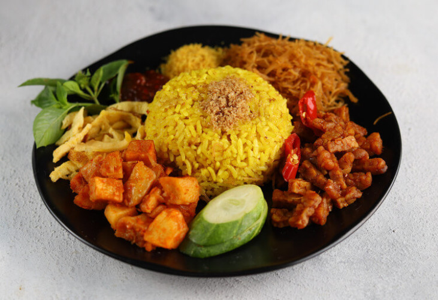

Ringkasan Menu
Bagian ini menggunakan grid-row: span 2 sebagai contoh penerapan span pada layout Grid P5.
Daftar Masakan
| Nama Masakan | Bahan Utama | Tingkat Kesulitan |
|---|---|---|
| Nasi Kuning | Nasi, santan, kunyit | Sedang |
| Mie Goreng | Mie, telur, sayuran | Mudah |
| Ayam Goreng | Ayam, bumbu rempah | Mudah |

Nasi Kuning
Sedang

Mie Goreng
Mudah

Ayam Goreng
Mudah
Tambah Resep
Tentang Saya
Halaman web ini dibuat sebagai wadah untuk mendokumentasikan berbagai menu masakan rumahan yang saya pelajari dan kuasai sehari-hari. Melalui halaman ini, resep dan tingkat kesulitan masakan dapat diakses dengan mudah dan terstruktur.